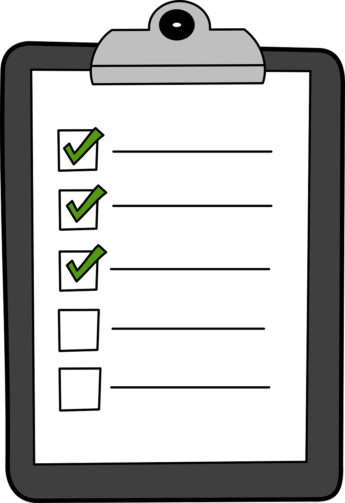

Diccionario
Collage
 Definición:
Definición:
Trabajo artístico que consiste en pegar sobre una tela, papel u otra superficie otros materiales, como papel, tela, fotografías, etc.
Ejemplo:
Haremos un collage con estos papeles de colores.
Imaginación
 Definición:
Definición:
Capacidad humana para representar mentalmente sucesos, historias o imágenes de cosas que no existen en la realidad o que son o fueron reales pero no están presentes.
Ejemplo:
Nuria tiene mucha imaginación.
Plantilla
Definición:
Modelo o guía de un escrito.
Ejemplo:
Usaremos esta plantilla para hacer la descripción.
Serpentina
 Definición:
Definición:
Tira de papel larga, estrecha y enrollada, que se lanzan unas personas a otras en las fiestas y celebraciones.
Ejemplo:
En mi fiesta lanzaremos serpentinas de colores.